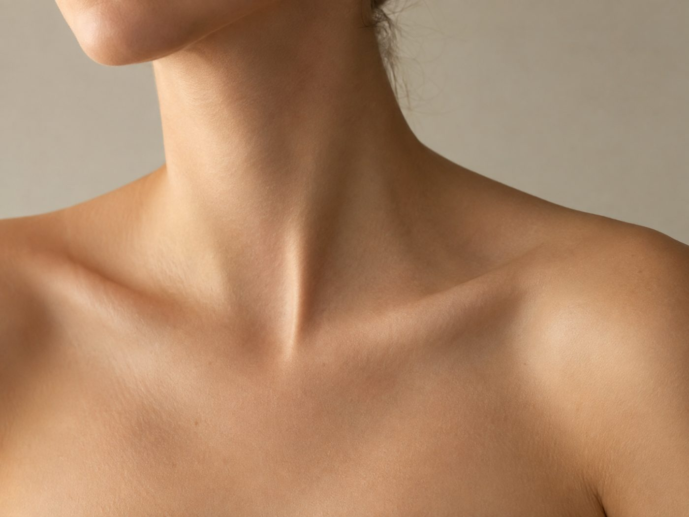

自宅で二の腕を整える
器具はいらない。
続く形にする。
二の腕の後ろ側は、日常生活ではあまり使わない場所です。自宅でできる動きを、短い時間で続けるのが現実的です。

先に結論です。腕の後ろ側を使う動きを、週3〜4回、1回5分。回数を増やすより、正しい形で行うほうを優先してください。
5分でできる5つの種目
| 種目 | やり方 | 回数の目安 |
|---|---|---|
| 壁腕立て（手幅せまく） | 壁に手をつき、肘を体の横に沿わせて曲げ伸ばす | 10回×2 |
| 椅子ディップス | 安定した椅子の端に手をつき、肘を後ろに曲げて体を下ろす | 8回×2 |
| キックバック | 前かがみで肘を固定し、水を入れたペットボトルを後ろに伸ばす | 左右12回 |
| 肩甲骨寄せ | 両手を後ろで組み、胸を開いて肩甲骨を寄せる | 20秒×2 |
| 腕回し | 手のひらを外に向け、腕を横に伸ばして小さく回す | 前後30秒 |
椅子は動かないものを使ってください。キャスター付きの椅子は危険です。
 あわせて読みたい二の腕がぷよぷよする原因をセルフチェック自分のタイプを先に確認する
あわせて読みたい二の腕がぷよぷよする原因をセルフチェック自分のタイプを先に確認する
3ヶ月の進め方
| 時期 | やること |
|---|---|
| 1〜2週目 | 各種目1セット。鏡を見ながらフォームを覚える |
| 3〜6週目 | 2セットに増やす。週3〜4回を習慣にする |
| 7週目以降 | ペットボトルを重くする、ゆっくり下ろすなど負荷を上げる |
やらないほうがいいこと
- 痛みがあるのに続ける。肘や肩に違和感が出たら中止してください
- 反動をつけて速く動かす。狙った場所に効きにくくなります
- 毎日長時間やる。休む日があるほうが続きます

あわせて読みたい肩を綺麗に見せる鎖骨と肩のラインは姿勢で変わります一人だとフォームが分からないとき
二の腕は自分で見えにくく、形が崩れていても気づきにくい場所です。オンラインのレッスンなら、自宅のまま見てもらえます。

体の状態には個人差があります。ここに書いた期間や変化は一般的な目安で、効果を保証するものではありません。痛みや持病がある場合は、無理をせず医師に相談してください。